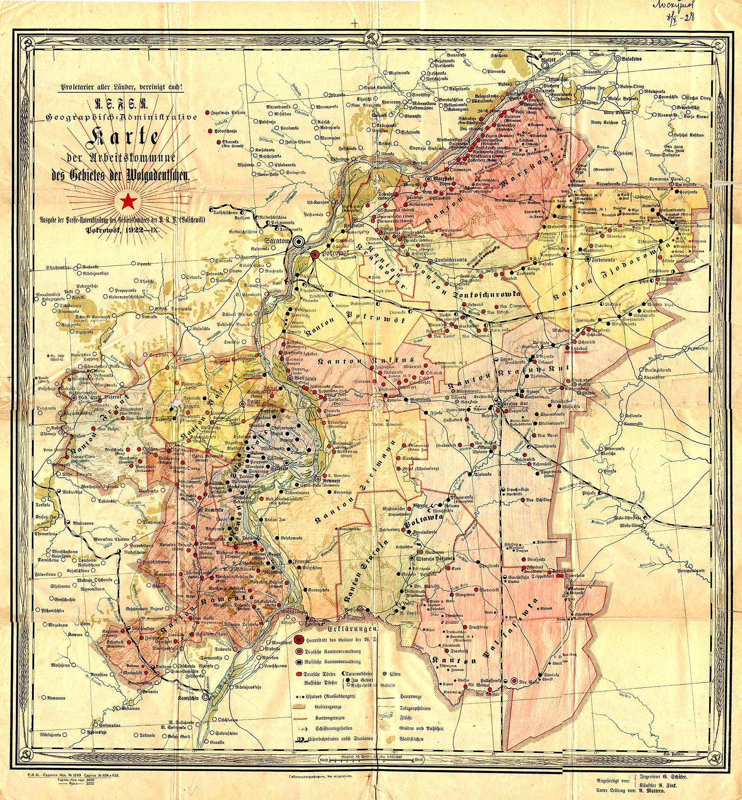

The Deportation of the Volga Germans to Central Asia (1941)
On 28 August 1941 a decree dissolved the Volga German Autonomous Republic and deported over half a million Germans to Kazakhstan, Siberia, the Altai and Central Asia — including Uzbekistan. A history of the deportation, the Labour Army, the special-settlement regime and rehabilitation.

On 28 August 1941 the Presidium of the USSR Supreme Soviet issued a decree ordering the resettlement of Germans living in the Volga region and dissolving the Volga German Autonomous Soviet Socialist Republic (ASSR). Within weeks more than half a million Germans were driven from their homes and deported to Kazakhstan, Siberia, the Altai and Central Asia — including Uzbekistan. This article covers the origins and scale of the deportation, the Labour Army (Trudarmiya) and the later process of rehabilitation. It continues a series on the Soviet deportations that shaped Central Asia's multi-ethnic society (Koryo-saram 1937, Crimean Tatars 1944, North Caucasus peoples 1943–44, Meskhetian Turks 1944).
Who the Volga Germans were: Catherine the Great's manifesto (1763)
The Volga Germans were descendants of German colonists who moved to Russia at the invitation of Empress Catherine II (Catherine the Great). Her manifesto of 22 July 1763 invited foreigners to settle in Russia, promising free land, freedom of religion, tax exemptions and exemption from military service (Source: Wikipedia, Volga Germans; germansfromrussiasettlementlocations.org). More than 30,000 people answered the call and founded German villages (colonies) along the Lower Volga, around Saratov.
By the 20th century the community had grown into a large ethnic group. After the revolution, the Volga German ASSR was established on 20 February 1924; its capital was the Volga port city of Engels (known as Pokrovsk until 1931) (Source: Wikipedia, Volga German ASSR). According to the 1939 census, about 366,685 Germans lived in the republic — roughly 60.5% of its total population of some 606,000 (Source: Wikipedia, Volga German ASSR).

The trigger: Operation Barbarossa and the 'fifth column' suspicion
On 22 June 1941 Nazi Germany invaded the Soviet Union in Operation Barbarossa. The Soviet leadership suspected ethnic Germans of being a potential 'fifth column' that could aid the enemy and decided on a collective, 'preventive' deportation of the entire Volga German population (Source: Wikipedia, Deportation of Soviet Germans (1941–1942)).
The decree of 28 August and the dissolution of the republic
The Supreme Soviet Presidium decree of 28 August 1941, titled 'On the resettlement of Germans living in the Volga region,' gave no rationale for the deportation and was kept secret and unpublished (Source: Wikipedia, Deportation of Soviet Germans (1941–1942)). The decree dissolved the Volga German ASSR; on 7 September 1941 its territory was divided between Saratov Oblast and Stalingrad Oblast (Source: Wikipedia, Volga German ASSR). The republic was never afterward restored.
The scale of the deportation: the numbers
From the Volga region alone, 479,841 Germans were deported (some from the ASSR, some from Saratov and Stalingrad oblasts) (Source: Wikipedia, Deportation of Soviet Germans (1941–1942)). The total number of Soviet Germans deported in the first wave of 1941 was at least 846,340, including nearly 60,000 from Crimea and over 380,000 from other western areas of the empire (Source: Wikipedia, Deportation of Soviet Germans (1941–1942)).
By the end of March 1942 the GULAG Special Settlements Department had registered 1,209,430 deported Germans — about 82% of the Soviet German population recorded in the 1939 census (roughly 1,424,000 people) (Source: Wikipedia, Deportation of Soviet Germans (1941–1942)). Overall totals differ between sources because they cover different groups (Volga, Crimea, repatriated Germans).
Destinations: Kazakhstan, Siberia, the Altai and Uzbekistan
The deportees were sent to Kazakhstan, Siberia, the Altai and Central Asia; within three months more than 400,000 arrived in Kazakhstan, and the rest were taken to Siberia (Source: Wikipedia, Deportation of Soviet Germans (1941–1942)). They were dispersed to collective farms and special settlements (spetsposeleniye), living under commandant control, where leaving the assigned area without permission was a crime (Source: Wikipedia, Deportation of Soviet Germans (1941–1942)).
The Labour Army (Trudarmiya)
From January 1942 the NKVD began mobilizing hundreds of thousands of German special settlers into forced-labour battalions collectively known as the 'labour army' (trudarmiya). A decree of 14 February 1942 separated German men aged 17–50 from their families and sent them to NKVD labour camps, where they were used mainly for construction and timber felling in the Ural Mountains (Source: Wikipedia, Deportation of Soviet Germans (1941–1942); volgagermans.org). On 7 October 1942 German women aged 16–45 also began to be sent to labour camps (Source: volgagermans.org). The age range for mobilization was later widened to 15–55 (Source: Wikipedia, Deportation of Soviet Germans (1941–1942)).
Deportation, hunger, cold and the harsh conditions of the labour camps caused many deaths: through 1948 an estimated 228,800 Germans are thought to have died as a result of the deportation and its related conditions (Source: Wikipedia, Deportation of Soviet Germans (1941–1942)).
The special-settlement regime and rehabilitation
Germans remained under the special-settlement (spetsposeleniye) regime for many years after the war. On 13 December 1955 a decree of the Supreme Soviet Presidium released the Germans from the special-settlement restrictions, but did not grant them the right to return to their former homelands (Source: volgagermans.org; Wikipedia, Deportation of Soviet Germans (1941–1942)).
On 29 August 1964, Decree No. 2820-VI of the Supreme Soviet Presidium annulled the blanket accusations of treason against the Germans, but still did not permit a mass return to their former homelands or the restoration of the ASSR (Source: Human Rights Watch; Wikipedia, Volga German ASSR). A decree adopted in 1972 lifted restrictions on place of residence and confirmed the Germans' right to return to the places from which they had been expelled (Source: Council of Europe report). Even so, the Volga German ASSR was never restored (Source: Wikipedia, Volga German ASSR).
Uzbekistan and the diaspora: legacy
Most of the Germans deported from the European part of the USSR in 1941 remained in Central Asia. Many Volga German families who had been deported to Siberia and Kazakhstan moved to the Tashkent area after the special-settlement regime was lifted in 1956 (Source: volgagermaninstitute.org; FUEN). In October 1990 the German cultural center 'Wiedergeburt' ('Rebirth') was founded in Tashkent (Source: FUEN). Today about 8,000 ethnic Germans live in Uzbekistan; at the end of the 1980s the community was five times larger (Source: FUEN).
After the easing of Soviet emigration restrictions at the end of 1987, the migration of Germans from the former USSR to Germany rose sharply. The flow of Aussiedler (later called Spätaussiedler) reached nearly 400,000 people a year in 1989 and 1990 (Source: IZA, 'Ethnic German Immigration…'). As a result a large part of the German communities in Central Asia returned to their historic homeland, Germany. (The departure of Germans from Uzbekistan in 1989–2000 is covered in detail in a separate article.)
Conclusion
The 1941 deportation of the Volga Germans was part of the Soviet-era forced resettlements that shaped the multi-ethnic demographic landscape of Central Asia, including Uzbekistan. The decree, the special-settlement regime and the Labour Army changed the lives of tens of thousands; the later rehabilitation remained partial and the ASSR was not restored, while most eventually emigrated to Germany.

Sources
- Wikipedia — Deportation of Soviet Germans (1941–1942)
- Wikipedia — Volga German Autonomous Soviet Socialist Republic
- Wikipedia — Volga Germans
- volgagermans.org — Deportation (1941) and the Trudarmiya
- Human Rights Watch — 'Punished Peoples' of the Soviet Union
- FUEN — Cultural Center of Germans in Uzbekistan 'Wiedergeburt'
- IZA Discussion Paper — Ethnic German Immigration from Eastern Europe and the Former Soviet Union to Germany